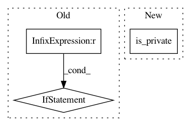

02b0fc91ade206d5ac167ddf89f5f1dfb4ad4a27,NodeClassifier/utils/pcap_utils.py,,is_external,#Any#Any#,203
Before Change
is_external: True or False if this is an internal session
"""
if address_1[0:3] == address_2[0:3]:
return True
return False
def is_protocol(session, protocol):
"""
After Change
is_external: True or False if this is an internal session
"""
if is_private(address_1) and is_private(address_2):
return False
return True
In pattern: SUPERPATTERN
Frequency: 3
Non-data size: 3
Instances
Project Name: CyberReboot/NetworkML
Commit Name: 02b0fc91ade206d5ac167ddf89f5f1dfb4ad4a27
Time: 2018-01-29
Author: CStephenson970@gmail.com
File Name: NodeClassifier/utils/pcap_utils.py
Class Name:
Method Name: is_external
Project Name: CyberReboot/NetworkML
Commit Name: 9f75a1cb875d40936c1ac9a59718e975382a9d23
Time: 2017-08-15
Author: CStephenson970@gmail.com
File Name: TraditionalML/eval_OneLayer.py
Class Name:
Method Name:
Project Name: CyberReboot/NetworkML
Commit Name: 9f75a1cb875d40936c1ac9a59718e975382a9d23
Time: 2017-08-15
Author: CStephenson970@gmail.com
File Name: TraditionalML/featurizer.py
Class Name:
Method Name: get_source